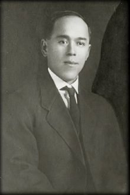
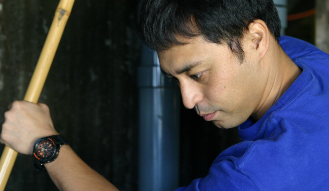
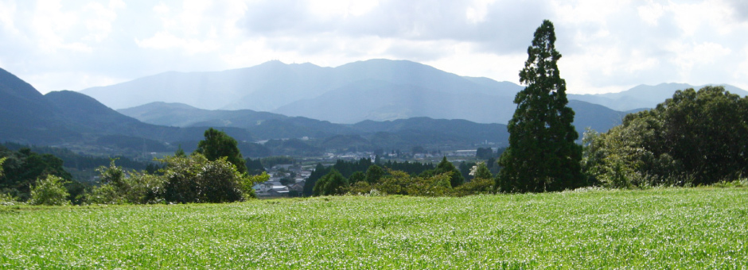
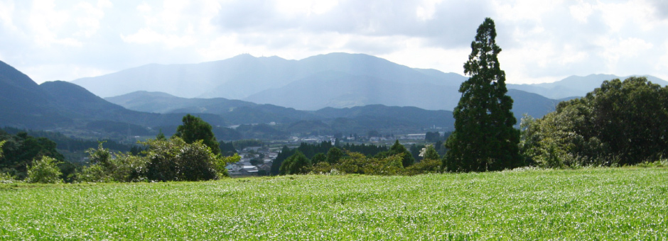

严守常压蒸馏的传统制酒工艺，
今后也将屹立不倒，
向下一个百年迈进。

祖

孫

曾孙辈的兄长幸一朗，弟弟润也正在守护着寿贺市的酒窖。
照片从左边起分别是渡边润也，渡边真利子，第三代社长渡边友美，以及第四代社长渡边幸一朗。（2014年11月摄影）
| 时间 | 大事记 |
|---|---|
| 公元1900年的时候 | 创始人渡边寿贺市为了学习林业技术，从爱媛县伊方村前往美国。 |
| 1914年 | 寿贺市从美国回到日本，来到林业兴荣的宫崎县田野村定居。并购买了当地正在出售的烧酒酒窖。创立了「渡边酿造」。 |
| 1919年 | 因为邻居家的大火而起火，酒窖几乎全烧。寿贺市虽然非常沮丧，但是后来在邻居的帮助下成功地再建了酒窖，重新开始酿造事业。 |
| 1928年 | 寿贺市的独生子早年身亡。因此寿贺市认侄子渡边鹤吉的长女渡边惠子作为养女。 |
| 1946年 | 在从军前就决心继承酒窖的渡边一男（旧姓 坂本）作为正式的第二代社长接管酒窖。 |
| 1975年 | 随着公司的法人化，公司改称「有限会社渡边酒造场」。 |
| 1982年 | 一男的长子、渡边友美成为酒窖的最高管理者。在国税局酒类鉴赏大会上首次获得优等奖。作为纪念，他将当时获奖的原浆长期储藏。在33年后的2014年命名为「创业百年纪念 大古酒」进行销售。 |
| 1996年 | 一男辞去社长职位。渡边友美作为第三代社长继任。 |
| 2001年 | 友美的长子、渡边幸一朗为了继承酒窖回到家乡。子孙三代一起从事酿酒事业。 |
| 2003年 | 幸一朗在回到酒窖之初，研发出的商品「无过滤 旭萬年」开始销售。 |
| 2011年 | 幸一朗弟弟渡边润成为酒窖新成员，兄弟二人共事酿造事业。 |
| 2014年 | 4月，友美辞去社长一职，幸一朗作为第四代社长继任。举行了继任仪式以及渡边酒造场创业一百周年庆典宴会。 |
| 10月，「创业百年纪念 大古酒」开始销售。 |

郷
西日本・南九州，

鳄塚山脉横跨宫崎市・日南市・北诸县郡三股町，其中高耸着山脉中的最高峰鳄塚山。

接受从鳄塚山吹来的山风（鳄塚风）的恩惠，
西日本・南九州，
自然丰美的宫崎市田野町造就出的「萬年」。

鳄塚山脉横跨宫崎市・日南市・北诸县郡三股町，其中高耸着山脉中的最高峰鳄塚山。
而在鳄塚山的山麓的田野就是我们的故乡——宫崎市田野町。
在宫崎县宫崎市田野町内，几乎全是以农业为主田野和耕地。南部横跨宫崎市・日南市・北诸县郡三股町的壮丽的鳄塚山是故乡的象征。
南九州所独有的温暖气候和被绿色包围的丰美自然，造就了「萬年」这一品牌。
接受从鳄塚山吹来的山风（鳄塚风）的恩惠，
田野町作为干萝卜产量第一的地区闻名日本。
在以农业为主业的田野町，同时也是闻名日本的是干萝卜的产地。产量为日本第一。在冬天，从鳄塚山吹来山风的时候，在町内各个地方组装起来的“萝卜风干架”，更是这个季节田野町所独有的景色。
道
交通方式及所用时间：从宫崎机场开车20分钟
| 航空 | ||||
|---|---|---|---|---|
| 东京（羽田机场） | 1小时 45分钟 | 宮崎机场 | ||
| 大阪（伊丹机场） | 1小时10分钟 | 宮崎机场 | ||
| 福岡机场 | 40分钟 | 宮崎机场 | ||
| ＪＲ铁路 | 日丰本线 | |||
|---|---|---|---|---|
| 宮崎站 | 23分钟 | 田野战 | ||
| 开车 | 普通道路＋宫崎高速公路 | |||
|---|---|---|---|---|
| 宮崎机场 | 20分钟 | 田野 | ||
渡边酒造场所在的田野町近邻宫崎市市中心部。经由宫崎站和宫崎机场来到田野町的话，开车或是乘坐ＪＲ铁路仅用20多分钟即可到达。在来到宫崎县的时候欢迎您前来莅临参观。